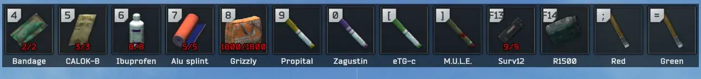
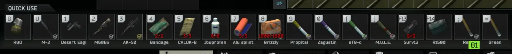

Mod
MoreQuickSlots
- Downloads
- 560
- Favourites
- 11
- Mod lists
- 9
Client-side mod that increases the number of freely assignable quick slots from the default 7 by up to 6 additional slots.
Key bindings and the number of slots can be customized in the BepinEx menu.


Installation
As usual, unzip to your SPT directory.
Uninstalling
Important: Before removing the mod, empty all extra slots (drag the items off the slots). The bindings live in the server profile; the vanilla client does not know slot numbers 12+ and the character/inventory screen will no longer load until you either reinstall the mod, or delete the key manually in your profile.json
Version
1.0.0
SPT ~4.0.4
Fika: compatible
560 downloads8.6 KB
Initial Release
VirusTotal: report 1